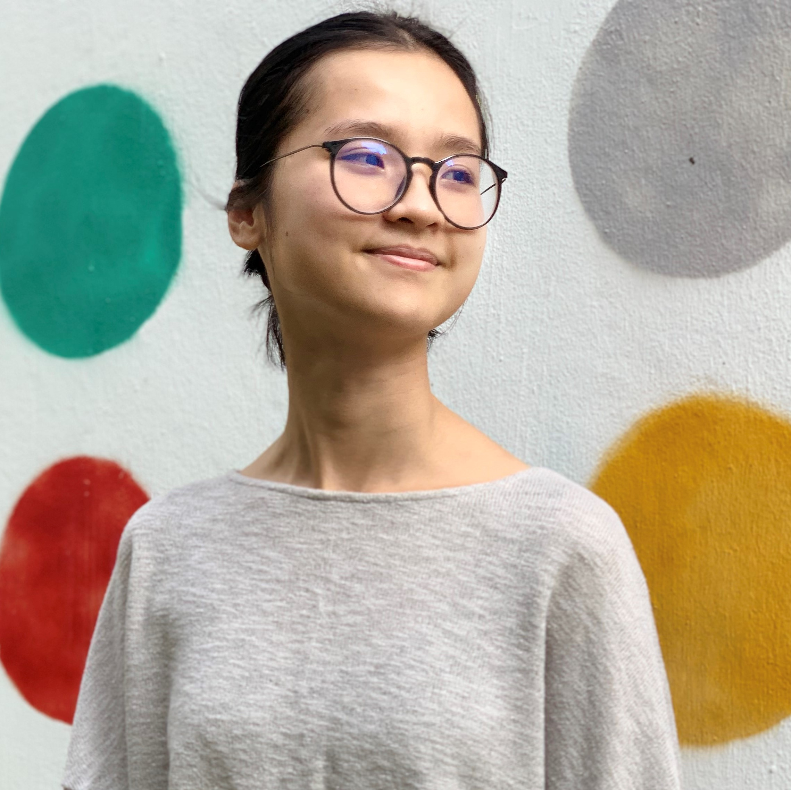

about

Hi, as you probably already know, my name is Thy Tran. I'm currently
a junior majoring in
Digital Media Design
within the Computer and Information Science department at University of Pennsylvania. I also submatriculated to the
Computer and Information Science master program
here.
I am interested in computer graphics and computer science in general. I had a lot of fun doing projects such as mini-Minecraft, rasterizer, etc. In my free time, I love to draw, read, listen to film analysis and game.
Please feel free to reach out to me through thytran316@outlook.com or LinkedIn if you seek for my resume or have inquiries about anything.
I am interested in computer graphics and computer science in general. I had a lot of fun doing projects such as mini-Minecraft, rasterizer, etc. In my free time, I love to draw, read, listen to film analysis and game.
Please feel free to reach out to me through thytran316@outlook.com or LinkedIn if you seek for my resume or have inquiries about anything.